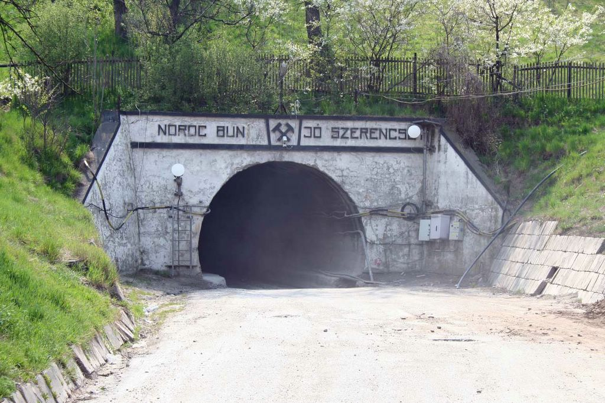
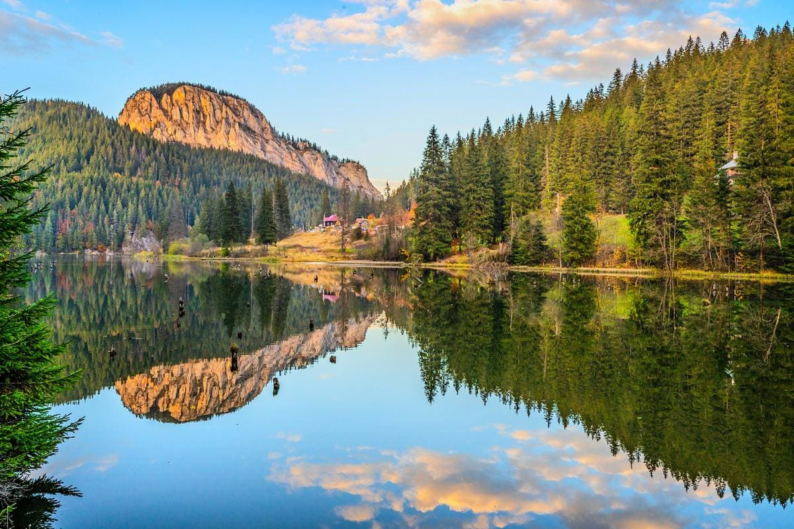
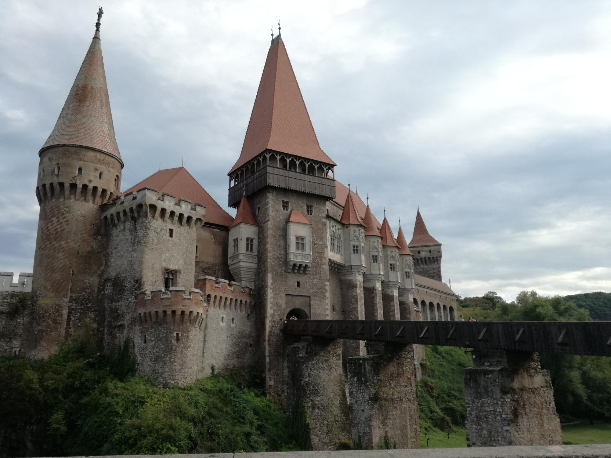

Korond

Korond Székelyudvarhely és Parajd közöt találhato a Korond-patak völgyében. A út mentén különböző bodék találhatoak ahol különbözö kerámiákat és fábol készült eszközöket lehet vásárolni. A fazekasság létalapját a falu nyugati határán, a Szakadát-patak bal partján előforduló szürke pala képezi melybŐl sokféle diszitet és disztelen tárgyakat készitenek. A falu híres borvízforrásairól. A borvíz szénsav alapú ásványvíz, amely kicsit savanykás ízű, de nagyon egészséges folyadék. A falu keleti végén a főút mentén mi is megkóstolhatjuk.
Parajdi sóbánya
Parajd városa a Sóvidék központja, a Kárpát-medence egyik legfontosabb sóbányászati helye. A terület sójának hatalmas mennyiségét jelzi, hogy több száz évre elegendő bányászás lehetséges még. A 120 méter mélyen lévő sóbányában kialakított hatalmas terembe buszok szállítják a látogatókat, ahol kalandpark, játszóház, pingpong asztalok és egy sóból épített kápolna is van. Bizonyítottan előnyös hatással van a szervezetre, főleg a légzőrendszernek nagyon hasznos a belélegzett magas sótartalmú levegő.
Gyilkos-tó
A legismertebb erdélyi tó létrejöttét az 1837-ben történt kőomlás okozta, amely elzárt több patakfolyást is. Igazi természeti ritkaság, páratlan látvány a rozsdás vörös víztükörből meredező fatörzsek csonkjaival és a tó mögötti Kis-Cohárd irdatlan nagy sziklatömbjével.
Kolozsvár

Erdély történelmi központja és legjelentősebb városa. Románia 2. legnagyobb települése, amely egyike volt a hét erődített városnak, amelyekről Erdély német nevét (Siebenbürgen) kapta. A magyar történelem egyik kiemelkedő városa, ahol Mátyás király és Bocskai István született. Kolozsvár főterén található Mátyás király emlékműve, amely az egyik legszebb magyar lovasszobor. A főtér másik ikonikus látványossága a Szent Mihály-templom. Erdély második legnagyobb alapterületű temploma a 76 méteres tornyával csodás épület.
Vajdahunyadi vár
Erdély legszebb vára, amelyet Mikszáth Kálmán a várak királyának nevezett. A 15. században épült vár a Hunyadiak tulajdonában volt. Hunyadi János és felesége, Szilágyi Erzsébet is itt lakott, az ő idejük alatt épült ki lovagvárrá. A 19. században két tűzvész is pusztított a várban. Az 1870-es években történt újjáépítésnek köszönhetően a gótikus stílus is fellelhető az egyébként reneszánsz várkastélyban. A magyar történelem egyik fontos helyszíne, ezt jelzi, hogy a vár mása Budapesten is felépült a Városligetben.
Madarasi-Hargita

A Székelyföld központjában elterülő vulkanikus eredetű Hargita-hegység egy másik kötelező desztináció a hegy szerelmesei számára. A hegység télen-nyáron rengeteg szabadidős tevékenységet kínál, ugyanis számos túraútvonal, sípálya és vendéglő áll a turisták rendelkezésére. Tegyük emlékezetessé kirándulásunkat egy laza sétával a Madarasi Hargita 1801 méter magas csúcsára, a Székelyek Szent Hegyére.